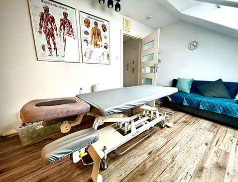
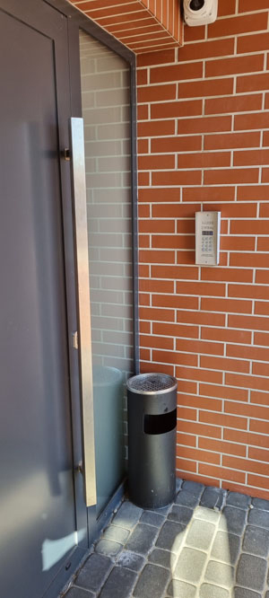
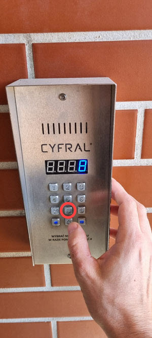
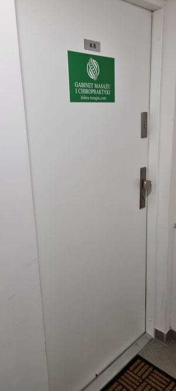

Podczas pierwszej wizyty przeprowadzamy wywiad dotyczący historii schorzeń pacjenta.
Badania laboratoryjne i radiologiczne potrafią być pomocne, jednakże zazwyczaj nie są niezbędnę do
postawienia diagnozy.
Jeśli pacjent posiada taką dokumentacje zalecamy jej zabranie ze sobą.
Jeśli nie posiadają państwo takich badań, terapeuta sam zdecyduje czy i jakie badania są potrzebne.
Przygotowanie do terapii
Pierwsza wizyta

W gabinecie
- W naszym gabinecie nie ma poczekalni, proszę o uszanowanie przerw pomiędzy zabiegami i przybycie nie więcej niż 5 minut przed terminem zabiegu.
- Przygotuj ubranie na zmianę, najlepiej szorty (opcjonalnie t-shirt), u kobiet polecam stanik rozpinany z tyłu (ułatwia to diagnostykę i masaż pleców). Trzeba być gotowym na wariant w którym terapeuta poprosi i rozebranie się do bielizny + ewentualne spodenki.
- Pacjent z długimi włosami powinien mieć możliwość ich związania (najlepiej w kok) w celu ułatwienia dostępu do szyi. Biżuteria na szyi, dłoniach, uszach powinna być przygotowana do łatwego zdjęcia.
Co należy wiedzieć przed terapią?
- W gabinecie zapewniamy jednorazowe posłanie, ale możesz dla swojego komfortu zabrać do gabinetu swój duży ręcznik.
- Bardzo prosimy o niezażywanie leków przeciwbólowych w dniu wizyty.
- Jeśli pacjent waży więcej niż 120 kg, prosimy o informację przed sesją (musimy odpowiednio dostosować stół do pracy nad takim pacjentem).
- Do półtorej godziny przed terapią nie zalecamy spożywania posiłków, podczas całego dnia w którym był wykonywany zabieg nie spożywaj napojów alkoholowych.
- Do półtorej godziny przed terapią nie zalecamy spożywania posiłków, podczas całego dnia w którym był wykonywany zabieg nie spożywaj napojów alkoholowych.
- Skóra powinna być czysta, w razie konieczności dostępny jest prysznic. W dniu zabiegu nie balsamuj ciała. Proszę też nie przesadzać z dezodorantami i makijażem.
- Proszę o przychodzenie bez osób towarzyszących.
- Jeśli z jakiś powodów chcesz odwołać lub przełożyć wizytę, zrób to z minimum 24 godzinnym wyprzedzeniem (może być smsem).
- Odwołanie w ostatniej chwili lub nieprzyjście na zabieg sprawi, że będzie przykro nie tylko nam, ale też innemu - cierpiącemu pacjentowi, który nie załapał się na zabieg z powodu braku wolnych miejsc danego dnia.
- Na często zadawane pytanie "ile sesji potrzeba", odpowiadamy - nie wiemy. Każdy przypadek jest bardzo indywidualny. Natomiast może pomóc informacja, że zdecydowana większość przypadków (70-80%), z którymi przychodzą nasi pacjenci (również tych, z którymi inni terapeuci sobie nie poradzili) do osiągnięcia przełomu wymagają 1 sesji. Nasze sesje są konkretne. Zawsze staramy się o maksymalne rezultaty w jak najkrótszym czasie. Na ogół więcej roboty wymagają przypadki utrwalone w organiźmie, które trwają i rozwijają się od dawna - zwłaszcza u osób starszych, schorowanych, otyłych. Nieco bardziej skomplikowane są też przypadki pacjentów, którzy mieli wcześniej operacje na kręgosłupie lub stawach. Nie mamy w zwyczaju prowadzenia terapii nachalnie i jeśli po max kilku sesjach nie widzimy rezultatu, staramy się pomóc nakierować takiego pacjenta na odpowiedniego specjalistę.
- Jeśli to była Twoja pierwsza sesja, jest bardzo prawdopodobne, że po kilku godzinach bedziesz obolały(a) przez jakiś czas w obszarach, które zostały rozmasowane na potrzebę terapii. Obolałość jest spowodowana również przystosowaniem się zespołu mięśniowo-więzadłowego do nowego ułożenia układu kostnego ciała i najeczęściej potrwa od kilku godzin do kilku dni. Bardzo rzadko, ale zdarzają sie ekstremalne przypadki, że nawet kilka tygodni. To jak bardzo nasilone to będzie i jak długo potrwa jest zależne od podobnych czynników co w/w (wiek, kondycja, zdrowie, budowa ciała, wcześniejsze korzystanie z masaży lub terapii manualnej indywidualny próg bólu). Nie przejmuj się i bądź cierpliwy(a). Potem powinno być już tylko lepiej. Podczas sesji dostniesz bardziej szczegółowe instrukcje z tym związane. Branie wolnego w pracy na dzień po zabiegu jest działaniem na wyrost. To jest jak zakwasy po konkretnym wysiłku, po dłuższej przerwie od jego wykonywania.
UWAGA!
- Preferujemy płatność gotówką, aczkolwiek jest możliwośc płacenia kartą lub blikiem.
- Na zdjęciu na niebiesko zaznaczono miejsca parkingowe przeznaczone dla pacjentów dobra-terapia.com
- Tak jak widać na poniższym zdjęciu. Mimo, że miejsca parkingowe są z prawej, gabinet jest z lewej strony budynku (klatka A). Piszemy o tym dodatkowo, bo pan mieszkający pod bo nie jest zadowolony z notorycznych pomyłek
- Nasz gabinet jest na 2 piętrze i w budynku nie ma windy.
1

Arakońska 12 A
2

Dzwonimy pod nr 8
3

Zapraszamy na 2 piętro